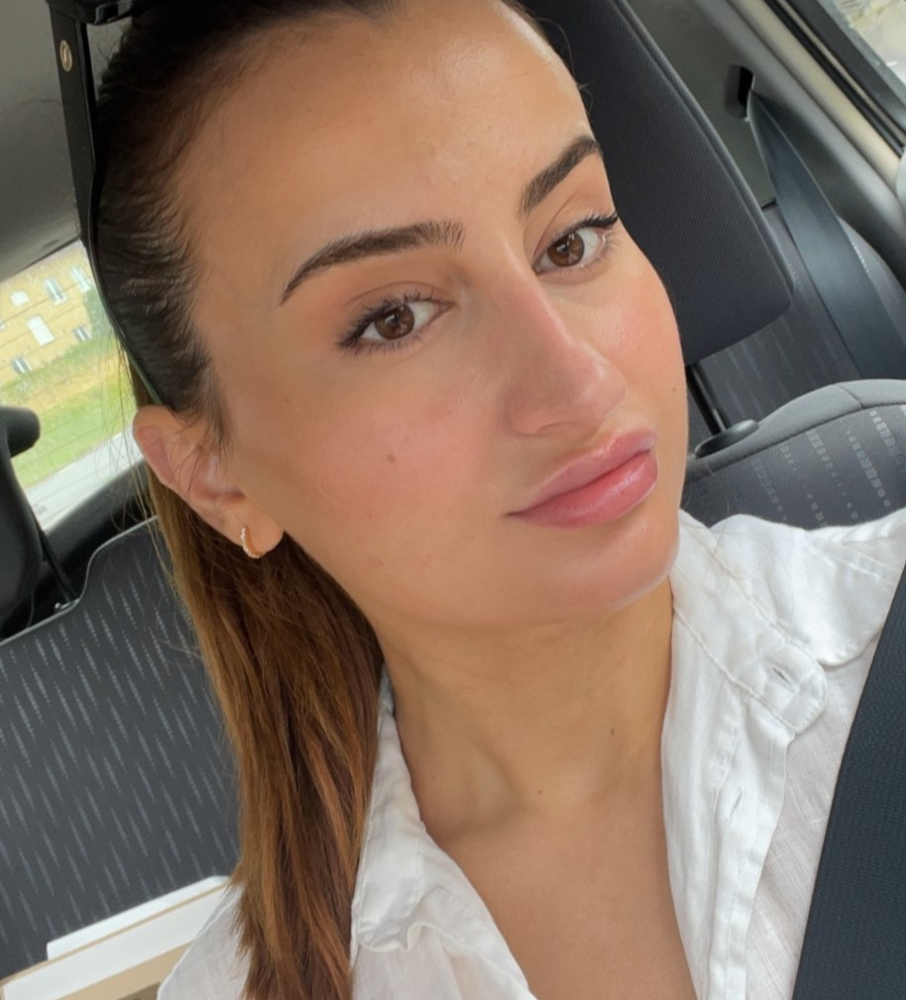

Venera Bajri

Födelsedatum: 1992.09.28
Mobilnummer: 072 870 74 62
E-mail: venera.bajri@gmail.com
Arbetslivserfarenhet
- Jobbat extra som timvikarie som personlig assistent på kvällar och helger augusti 2021 - april
2023
- Jobbat på Transcom som Teamleader/gruppchef för Tele2 mars 2020 - mars 2023
- Jobbat på Transcom som First Line Agent mars 2018 - februari 2020
- Jobbat som vikarie på alla grundskolor i Flens kommun december 2017 - mars 2018 Har
vikarierat för läraren och elevassistenter. Jag blev inringd eller bokad i förväg flera gånger i veckan.
- Jobbat på GB Glace i Flen som Bas operatör januari 2017 - september 2017
- Jobbat ett kort tag som medlemsrekryterare face2face på Amnesty Sverige i Stockholm.
september 2016
- Jobbat som servitris samt i kassan på ''King’s Pizzerian'' i Flen april 2015 - juni 2015
Arbetade vid behov, några dagar i månaden. Tog emot beställningar på telefon också.
- Jobbat som servitris på ''Star Pizzerian'' i Malmköping sommar 2014
- Jobbat volontärt på Second Hand i Malmköping mars 2014 - april 2015
4 timmar om dagen, 5 dagar i veckan. Hjälpte till med sortering, prissättning och kassajobb. Pengarna
gick till människor i nöd över hela världen.
Utbildning
Läste Arkitektur ett år på Politektniska Universtetet i Tirana, Albanien okt 2010 - jun 2011
Naturprogrammet, Ismail Qemali gymnasiet, Tirana, Albanien sep 2006 - jun 2010
Språkkunskaper
- Svenska Flytande i tal och skrift
- Albanska Flytande i tal och skrift (modersmål)
- Engelska Mycket bra kunskaper i tal och skrift
- Spanska Bra kunskaper i tal och skrift
- Italienska Gymnasienivå, förstår enklare samtal och texter
Färdigheter
- Ledarskap
- Sales
- Kundservice
- Coaching
- Analys av data/KPIer
- Personalhanterings frågor
- Costumer satisfaction
- Vård av omsorg av personer med funktionsnedsättning
Datorkunskaper
- Väl förtrogen med datorn, Office/Google paketet och Internet.
- Bra kunskaper inom teknisk bredbandssupport och mobila tjänster
- Kan använda HTML bra och kan skapa enklare websidor. Utbildar sig i dagsläget på att bli Mjukvaruutvecklare
Här är ett exempel på en mångsidig hemsida jag har själv skapat.